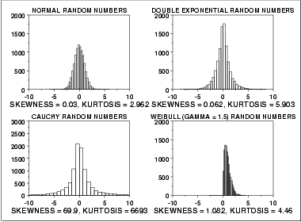

|
1.
Exploratory Data Analysis
1.3. EDA Techniques 1.3.5. Quantitative Techniques
|
|||
| Skewness and Kurtosis |
A fundamental task in many statistical analyses is to characterize
the location and
variability of a data set.
A further characterization of the data includes skewness and kurtosis.
Skewness is a measure of symmetry, or more precisely, the lack of symmetry. A distribution, or data set, is symmetric if it looks the same to the left and right of the center point. Kurtosis is a measure of whether the data are heavy-tailed or light-tailed relative to a normal distribution. That is, data sets with high kurtosis tend to have heavy tails, or outliers. Data sets with low kurtosis tend to have light tails, or lack of outliers. A uniform distribution would be the extreme case. The histogram is an effective graphical technique for showing both the skewness and kurtosis of data set. |
||
| Definition of Skewness |
For univariate data Y1, Y2, ...,
YN, the formula for skewness is:
The above formula for skewness is referred to as the Fisher-Pearson coefficient of skewness. Many software programs actually compute the adjusted Fisher-Pearson coefficient of skewness
The skewness for a normal distribution is zero, and any symmetric data should have a skewness near zero. Negative values for the skewness indicate data that are skewed left and positive values for the skewness indicate data that are skewed right. By skewed left, we mean that the left tail is long relative to the right tail. Similarly, skewed right means that the right tail is long relative to the left tail. If the data are multi-modal, then this may affect the sign of the skewness. Some measurements have a lower bound and are skewed right. For example, in reliability studies, failure times cannot be negative. It should be noted that there are alternative definitions of skewness in the literature. For example, the Galton skewness (also known as Bowley's skewness) is defined as
The Pearson 2 skewness coefficient is defined as
There are many other definitions for skewness that will not be discussed here. |
||
| Definition of Kurtosis |
For univariate data Y1, Y2, ...,
YN, the formula for kurtosis is:
|
||
| Alternative Definition of Kurtosis |
The kurtosis for a standard normal
distribution is three. For this reason, some sources
use the following definition of kurtosis (often referred to as
"excess kurtosis"):
Which definition of kurtosis is used is a matter of convention (this handbook uses the original definition). When using software to compute the sample kurtosis, you need to be aware of which convention is being followed. Many sources use the term kurtosis when they are actually computing "excess kurtosis", so it may not always be clear. |
||
| Examples |
The following example shows histograms for 10,000 random numbers
generated from a normal, a double exponential, a Cauchy, and a Weibull
distribution.

| ||
| Normal Distribution | The first histogram is a sample from a normal distribution. The normal distribution is a symmetric distribution with well-behaved tails. This is indicated by the skewness of 0.03. The kurtosis of 2.96 is near the expected value of 3. The histogram verifies the symmetry. | ||
| Double Exponential Distribution | The second histogram is a sample from a double exponential distribution. The double exponential is a symmetric distribution. Compared to the normal, it has a stronger peak, more rapid decay, and heavier tails. That is, we would expect a skewness near zero and a kurtosis higher than 3. The skewness is 0.06 and the kurtosis is 5.9. | ||
| Cauchy Distribution |
The third histogram is a sample from a
Cauchy distribution.
For better visual comparison with the other data sets, we restricted the histogram of the Cauchy distribution to values between -10 and 10. The full data set for the Cauchy data in fact has a minimum of approximately -29,000 and a maximum of approximately 89,000. The Cauchy distribution is a symmetric distribution with heavy tails and a single peak at the center of the distribution. Since it is symmetric, we would expect a skewness near zero. Due to the heavier tails, we might expect the kurtosis to be larger than for a normal distribution. In fact the skewness is 69.99 and the kurtosis is 6,693. These extremely high values can be explained by the heavy tails. Just as the mean and standard deviation can be distorted by extreme values in the tails, so too can the skewness and kurtosis measures. |
||
| Weibull Distribution | The fourth histogram is a sample from a Weibull distribution with shape parameter 1.5. The Weibull distribution is a skewed distribution with the amount of skewness depending on the value of the shape parameter. The degree of decay as we move away from the center also depends on the value of the shape parameter. For this data set, the skewness is 1.08 and the kurtosis is 4.46, which indicates moderate skewness and kurtosis. | ||
| Dealing with Skewness and Kurtosis |
Many classical statistical tests and intervals
depend on normality assumptions. Significant skewness and
kurtosis clearly indicate that data are not normal.
If a data set exhibits significant skewness or kurtosis (as
indicated by a histogram or the numerical measures), what can
we do about it?
One approach is to apply some type of transformation to try to make the data normal, or more nearly normal. The Box-Cox transformation is a useful technique for trying to normalize a data set. In particular, taking the log or square root of a data set is often useful for data that exhibit moderate right skewness. Another approach is to use techniques based on distributions other than the normal. For example, in reliability studies, the exponential, Weibull, and lognormal distributions are typically used as a basis for modeling rather than using the normal distribution. The probability plot correlation coefficient plot and the probability plot are useful tools for determining a good distributional model for the data. |
||
| Software | The skewness and kurtosis coefficients are available in most general purpose statistical software programs. | ||